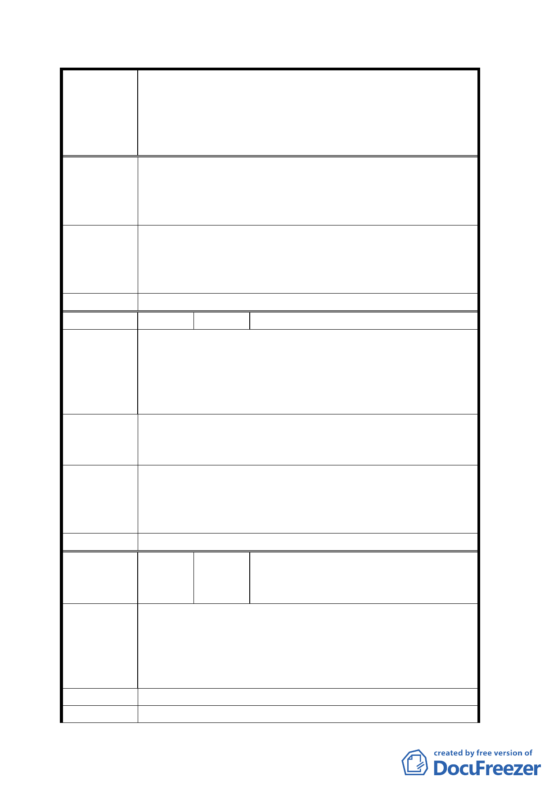

變更臺北市市民大道（新生北路至基隆路段）兩側第四之
一種住宅區、第四種住宅區、第三之二種住宅區、第三之
案 名 一種住宅區、第三種住宅區、道路用地為第三種商業區
（特）、第三種住宅區為公園用地暨劃設都市更新地區計畫
案
二、原第三之一種住宅區，第三種住宅區、道路用地變更為
第三之二種住宅區（市民大道沿線 30 公尺範圍）。
三、刪除都市計畫回饋規定。
四、都市更新時程獎勵應各增長一年。
有關變更為第三種商業區（特）採原容積率之相關規定為
專案小組審 本市商業區通盤檢討之通則，本案已就放寬建蔽率、增加
查 結 議 各類獎勵及劃定都市更新地區作為誘因。建議依公展計畫
辦理。
委員會決議 同專案小組審查結論。
編 號 ６ 陳情人 臺北市市民權益關懷協會李林耀
建議位置：中山區長安段四小段 296 地號
該地號等為集合住宅，老舊之厝尾臨路面。
陳 情 理 由 商三（特）祈放寬規定之使用，容積率不夠影響居民參與
意願，涉及成本及使用坪數原有縮水，合建、自建皆無誘
因更新或改建不符效益。
該建議位置現為集合住宅區共計約 150 戶
建 議 辦 法 1. 直接變更使用分區為「商三」「商四」非商三特
2.檢討時儘量朝市政之利益居民之利益較理想邊際效益
有關變更為第三種商業區（特）採原容積率之相關規定為
專案小組審 本市商業區通盤檢討之通則，本案已就放寬建蔽率、增加
查 結 論 各類獎勵及劃定都市更新地區作為誘因。建議依公展計畫
辦理。
委員會決議 同專案小組審查結論。
林明允、陳永昌、謝張賽娥、溫紹輝、
編 號 ７ 陳情人 簡彭美華、彭曾梅妹、林秀珍、李鍾月
雲、葛戟華、蔡麗華
建議位置：大安區懷生段三小段 145 地號
一、本基地與北側計畫範圍內之街廓同屬當年整體開發案之
陳 情 理 由 社區。
二、為利本社區未來整體開發及社區之共通性完整性一致
性。
建 議 辦 法 建議南側街廓區納入計畫範圍。
專案小審查 八德路二段三十四巷六弄以南（大安區懷生段三小段 154 地號等）
一五